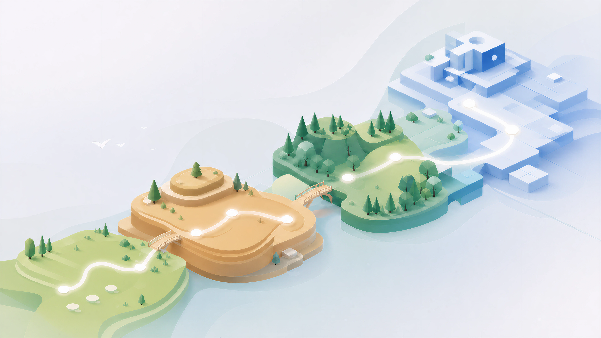

课
典型大班课堂
强项是教师的临场解释、追问与情绪感染；限制在于统一节奏下，很难让大班里的每个人都完成操作。
启发与追问很强
每个人都动手有限
个体即时反馈有限
自主节奏较弱
我们把教学材料写进浏览器：概念不再只靠文字和视频讲解，而是变成可以观察、操作、试错和验证的学习过程。

交互式学习不是给教材加几个动画，而是把学习从“内容播放”改写成“行动与反馈”。
What it is
最直白的定义，就是用 HTML 编写教学材料。但 HTML 在这里不只是承载文字：它可以运行演示、响应操作、生成新数据，也可以在学习者做出判断后立刻给出反馈。
因此，同一个页面同时承担了教材、实验台和练习册的角色。学习者不是沿着作者的结论往下读，而是在“先预测—再操作—看结果—改判断”的循环中，亲自完成理解。
不要先背“损失函数”的定义。拖动预测值，先看见误差如何变化。
Why interactive
三种方式不是谁取代谁，而是解决不同问题。交互式学习最独特的价值，是把原本只能在脑中发生的理解，变成一次可观察、可反馈、可重复的行动。
强项是教师的临场解释、追问与情绪感染；限制在于统一节奏下，很难让大班里的每个人都完成操作。
强项是低成本传播、完整叙事和随时回看；限制是观看本身不会暴露误解，“看懂了”很容易替代“真的会了”。
强项是让每个人必须预测、操作和答题，并用即时反馈暴露理解偏差；它更像一座可反复进入的实验室。
视频结束时，系统只知道你“看完了”；互动任务结束时，系统知道你做了什么判断、错在哪里、是否在反馈后完成了修正。图中长度用于表达不同媒介的相对能力结构，不代表实验测量分数。
Learning experiences
每个模块只抓住一个核心障碍：先让旧方法在真实任务中失效，再让新概念以“解决问题的工具”出现。术语和公式不是开场，而是对已经发生过的体验做收束。
The hard part
一个模块同时要求学科深度、教材编排、交互设计和产品克制。难点不是“能不能做出网页”，而是能不能判断：什么值得教、先让学生经历什么、哪里应该停、哪一次反馈才会真正改变理解。
Design philosophy
Meta Skill 不是某个页面模板，而是一组约束设计判断的上层能力：面对任何新概念，都知道该删掉什么、先呈现什么，以及如何让学生通过行动自己逼近答案。
最好的交互不会让人意识到自己在“学习一个界面”。操作方式与概念本身同构，学生几乎不需要阅读说明，就知道下一步该做什么。
理解距离，就在数轴上靠近目标；理解分类边界，就直接在两类样本之间画线。这不只是把复杂界面分几步展示，而是控制概念进入头脑的顺序。每一阶段只引入一个新变量，让新工具在学习者产生需要之后出现。
术语晚于体验，公式晚于直觉；克制本身就是教学设计。未来并不是所有细节都值得被同等记忆。我们更关注能否建立一种可迁移的判断：换一个维度、换一种数据分布，仍然知道应该观察什么、为什么选择某类方法。
目标不是背出某个排序算法的逐行实现，而是理解约束如何决定方案，并知道何时调用、比较或重构它。题目不是学完后的附录，而是理解过程的一部分。每次关键操作都立刻回应：发生了什么、为什么，以及原来的判断需要如何修正。
没有认知反馈的点击只是互动；能暴露误解并引导修正，才构成学习。From craft to system
我们开始采用 React + TypeScript 构建后续模块。组件化让实验面板、反馈、关卡和数据记录可以复用；类型系统让模块在持续增加功能时仍可维护。这解决的是“做得快、改得动”。
更关键的一层，是把无意识设计、渐进式概念披露和反馈闭环写进设计规范与生产流程。这解决的是“方向不跑偏、质量可复制”。两层叠加，才可能把原本依赖个人 Taste 的手艺，逐步变成可扩展的系统。